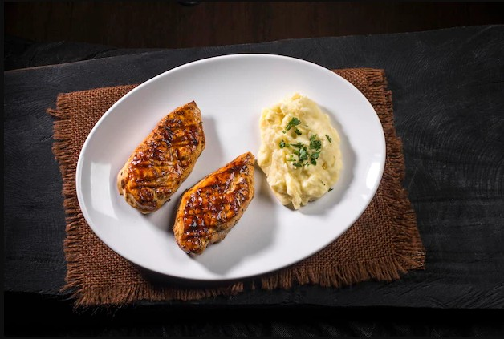

Grilled chicken with mashed potatoes Recipe

A tasty and simple dish
This meal is easy and just will take some minutes to prepare, you will not need extravagant ingredients, which makes this dish perfect to every moment.
Ingredients
Mashed Potatoes
- 5 pounds Golden Potatoes
- 1 cup whole milk
- 6 tablespoons butter
- 4 ounces cream cheese, room temperature
- 2 large cloves garlic, minced
- fine sea salt
Grilled Chicken
- 2 Boneless, Skinless Chicken Breasts
- ¼ cup Barbecue Sauce
- 1 tablespoon Creamy Mustard Sauce
- Salt and black pepper
Steps
Mashed Potatoes
- Cut the potatoes. Feel free to peel your potatoes or leave the skins on.
- Boil the potatoes for about 10-12 minutes until they are soft
- In a small pan at low heat melt the butter and softly fry the garlic
- When the potatoes are ready put them in a bowl add milk, cream cheese and the melted butter with garlic
- Mash everything together and add salt to taste
- Serve with chopped parsley, optional
Grilled Chicken
- Season with salt and pepper on both sides
- In a medium pan (nonstick, if you have one), heat 1 teaspoon of oil on medium-high until hot.
- Add the seasoned chicken and cook 5 to 6 minutes per side at medium heat
- Add barbecue sauce and mustard and cook and extra minute per side
Back to Home